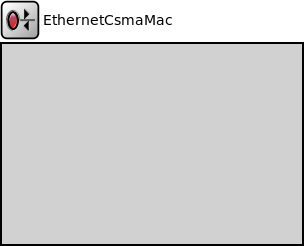

Package: inet.linklayer.ethernet.basic
EthernetCsmaMac
compound moduleEthernet MAC layer. MAC performs transmission and reception of frames. See the ~IEtherMac for the Ethernet MAC layer general informations. Doesn't do encapsulation/decapsulation; see ~Ieee8022Llc and ~EthernetEncapsulation for that.
Supported variations:
- 10Mb Ethernet (duplex and half-duplex, coaxial cable(1,2) or twisted pair)
- 100Mb Ethernet (duplex and half-duplex)
- 1Gb Ethernet (duplex and half-duplex)
- 10Gb Ethernet
- 40Gb Ethernet
- 100Gb Ethernet
Supports all three Ethernet frame types. (It handles ~EtherFrame message class; specific frame classes (Ethernet-II, IEEE 802.3) are subclassed from that one.) RAW mode (only used by the IPX protocol) is not supported.
Expected environment:
- phys$i and phys$o should be connected to the "network"
- upperLayerIn and upperLayerOut are usually connected to ~EtherLlc (in hosts) or ~MacRelayUnit (in a switch)
Processing of frames received from higher layers:
- if src address in the frame is empty, fill it out
- frames get queued up until transmission
- transmit according to the CSMA/CD protocol
- can send PAUSE message if requested by higher layers (PAUSE protocol, used in switches).
Processing of frames incoming from the network:
- receive according to the CSMA/CD protocol
- CRC checking (frames with the error bit set are discarded).
- respond to PAUSE frames
- in promiscuous mode, pass up all received frames; otherwise, only frames with matching MAC addresses and broadcast frames are passed up.
The module does not perform encapsulation or decapsulation of frames -- this is done by higher layers (~Ieee8022Llc and ~EthernetEncapsulation).
When a frame is received from the higher layers, it must be an ~EtherFrame, and with all protocol fields filled out (including the destination MAC address). The source address, if left empty, will be filled in. Then frame is queued and transmitted according to the CSMA/CD protocol.
Data frames received from the network are EtherFrames. They are passed to the higher layers without modification. Also, the module properly responds to PAUSE frames, but never sends them by itself -- however, it transmits PAUSE frames received from upper layers. See PAUSE handling for more info.
For more info see Ethernet Model Overview.
<b>Disabling and disconnecting</b>
If the MAC is not connected to the network ("cable(1,2) unplugged"), it will start up in "disabled" mode. A disabled MAC simply discards any messages it receives. It is currently not supported to dynamically connect/disconnect a MAC.
In routers, MAC relies on an external queue module (see ~IPacketQueue) to model finite buffer, implement QoS and/or RED, and requests packets from this external queue one-by-one.
In hosts, no such queue is used, so MAC contains an internal queue to store packets waiting for transmission. Conceptually, the queue is of infinite size, but for better diagnostics one can specify a hard limit in the packetCapacity parameter -- if this is exceeded, the simulation stops with an error.
<b>Physical layer messaging</b>
Please see Messaging on the physical layer.
<b>See also:</b> ~EthernetMac, ~EthernetInterface, ~IPacketQueue, ~EthernetEncapsulation, ~Ieee8022Llc
<b>See also:</b> ~EthernetMacHeader, ~Ieee8022LlcHeader, ~EthernetFcs
Inheritance diagram
The following diagram shows inheritance relationships for this type. Unresolved types are missing from the diagram.
Parameters
| Name | Type | Default value | Description |
|---|---|---|---|
| interfaceTableModule | string |
The path to the InterfaceTable module |
|
| displayStringTextFormat | string | "rate: %b\nsent: %s, rcvd: %r\nqueue: %q, drop: %d" | |
| sendRawBytes | bool | false |
when true packets are serialized into a sequence of bytes before sending out |
| promiscuous | bool | false |
if true, all packets are received, otherwise only the ones with matching destination MAC address |
| duplexMode | bool |
selects full-duplex (true) or half-duplex (false) operation |
|
| frameBursting | bool | true |
enable/disable frame bursting mode in Gigabit Ethernet |
| mtu | int | 1500B | |
| fcsMode | string | ||
| stopOperationExtraTime | double | -1s |
extra time after lifecycle stop operation finished |
| stopOperationTimeout | double | 2s |
timeout value for lifecycle stop operation |
Properties
| Name | Value | Description |
|---|---|---|
| lifecycleSupport | ||
| class | EthernetCsmaMac | |
| display | i=block/rxtx |
Gates
| Name | Direction | Size | Description |
|---|---|---|---|
| upperLayerIn | input |
to ~EthernetEncapsulation or ~IMacRelayUnit |
|
| upperLayerOut | output |
to ~EthernetEncapsulation or ~IMacRelayUnit |
|
| phys | inout |
to the network |
Signals
| Name | Type | Unit |
|---|---|---|
| receptionStateChanged | long | |
| receptionEnded | inet::physicallayer::EthernetSignalBase | |
| packetReceivedFromLower | inet::Packet | |
| packetReceivedFromUpper | inet::Packet | |
| txPausePkUnits | long | |
| rxPausePkUnits | long | |
| collision | long | |
| transmissionStarted | inet::physicallayer::EthernetSignalBase | |
| backoffSlotsGenerated | long | |
| rxPkOk | inet::Packet | |
| receptionStarted | inet::physicallayer::EthernetSignalBase | |
| packetDropped | Packet | |
| packetSentToLower | inet::Packet | |
| packetSentToUpper | inet::Packet | |
| transmissionStateChanged | long | |
| transmissionEnded | inet::physicallayer::EthernetSignalBase |
Statistics
| Name | Title | Source | Record | Unit | Interpolation Mode |
|---|---|---|---|---|---|
| passedUpPk | packets passed to higher layer | packetSentToUpper | count, sum(packetBytes), vector(packetBytes) | none | |
| collision | collision | count, vector | none | ||
| packetDropInterfaceDown | packet drop: interface down | packetDropReasonIsInterfaceDown(packetDropped) | count, sum(packetBytes), vector(packetBytes) | none | |
| backoffSlotsGenerated | backoff | count, vector | none | ||
| rxPkOk | packets received OK | rxPkOk | count, sum(packetBytes), vector(packetBytes) | none | |
| packetDropNotAddressedToUs | packet drop: not addressed to us | packetDropReasonIsNotAddressedToUs(packetDropped) | count, sum(packetBytes), vector(packetBytes) | none | |
| packetReceivedFromUpper | packet bytes from higher layer | packetReceivedFromUpper | count, sum(packetBytes), vector(packetBytes) | none | |
| txPausePkUnits | pause units sent | count, sum, vector | none | ||
| txPk | packets transmitted | packetSentToLower | count, sum(packetBytes), vector(packetBytes) | none | |
| rxPausePkUnits | pause units received | count, sum, vector | none | ||
| packetDropIncorrectlyReceived | packet drop: incorrectly received | packetDropReasonIsIncorrectlyReceived(packetDropped) | count, sum(packetBytes), vector(packetBytes) | none |
Source code
// // Ethernet MAC layer. MAC performs transmission and reception of frames. // See the ~IEtherMac for the Ethernet MAC layer general informations. // Doesn't do encapsulation/decapsulation; see ~Ieee8022Llc and ~EthernetEncapsulation for // that. // // Supported variations: // - 10Mb Ethernet (duplex and half-duplex, coaxial cable or twisted pair) // - 100Mb Ethernet (duplex and half-duplex) // - 1Gb Ethernet (duplex and half-duplex) // - 10Gb Ethernet // - 40Gb Ethernet // - 100Gb Ethernet // // Supports all three Ethernet frame types. (It handles ~EtherFrame message class; // specific frame classes (Ethernet-II, IEEE 802.3) are subclassed from that one.) // RAW mode (only used by the IPX protocol) is not supported. // // Expected environment: // - phys$i and phys$o should be connected to the "network" // - upperLayerIn and upperLayerOut are usually connected to ~EtherLlc (in hosts) // or ~MacRelayUnit (in a switch) // // <b>Operation</b> // // Processing of frames received from higher layers: // - if src address in the frame is empty, fill it out // - frames get queued up until transmission // - transmit according to the CSMA/CD protocol // - can send PAUSE message if requested by higher layers (PAUSE protocol, // used in switches). // // Processing of frames incoming from the network: // - receive according to the CSMA/CD protocol // - CRC checking (frames with the error bit set are discarded). // - respond to PAUSE frames // - in promiscuous mode, pass up all received frames; // otherwise, only frames with matching MAC addresses and // broadcast frames are passed up. // // The module does not perform encapsulation or decapsulation of frames -- // this is done by higher layers (~Ieee8022Llc and ~EthernetEncapsulation). // // When a frame is received from the higher layers, it must be an ~EtherFrame, // and with all protocol fields filled out // (including the destination MAC address). The source address, if left empty, // will be filled in. Then frame is queued and transmitted according // to the CSMA/CD protocol. // // Data frames received from the network are EtherFrames. They are passed to // the higher layers without modification. // Also, the module properly responds to PAUSE frames, but never sends them // by itself -- however, it transmits PAUSE frames received from upper layers. // See <a href="ether-pause.html">PAUSE handling</a> for more info. // // For more info see <a href="ether-overview.html">Ethernet Model Overview</a>. // // <b>Disabling and disconnecting</b> // // If the MAC is not connected to the network ("cable unplugged"), it will // start up in "disabled" mode. A disabled MAC simply discards any messages // it receives. It is currently not supported to dynamically connect/disconnect // a MAC. // // // <b>Queueing</b> // // In routers, MAC relies on an external queue module (see ~IPacketQueue) // to model finite buffer, implement QoS and/or RED, and requests packets // from this external queue one-by-one. // // In hosts, no such queue is used, so MAC contains an internal // queue to store packets waiting for transmission. // Conceptually, the queue is of infinite size, but for better diagnostics // one can specify a hard limit in the packetCapacity parameter -- if this is // exceeded, the simulation stops with an error. // // // <b>Physical layer messaging</b> // // Please see <a href="physical.html">Messaging on the physical layer</a>. // // @see ~EthernetMac, ~EthernetInterface, ~IPacketQueue, ~EthernetEncapsulation, ~Ieee8022Llc // @see ~EthernetMacHeader, ~Ieee8022LlcHeader, ~EthernetFcs // module EthernetCsmaMac like IEtherMac { parameters: string interfaceTableModule; // The path to the InterfaceTable module string displayStringTextFormat = default("rate: %b\nsent: %s, rcvd: %r\nqueue: %q, drop: %d"); bool sendRawBytes = default(false); // when true packets are serialized into a sequence of bytes before sending out bool promiscuous = default(false); // if true, all packets are received, otherwise only the // ones with matching destination MAC address bool duplexMode; // selects full-duplex (true) or half-duplex (false) operation bool frameBursting = default(true); // enable/disable frame bursting mode in Gigabit Ethernet int mtu @unit(B) = default(1500B); string fcsMode @enum("declared","computed"); @lifecycleSupport; double stopOperationExtraTime @unit(s) = default(-1s); // extra time after lifecycle stop operation finished double stopOperationTimeout @unit(s) = default(2s); // timeout value for lifecycle stop operation @class(EthernetCsmaMac); @display("i=block/rxtx"); @signal[rxPkOk](type=inet::Packet); @signal[txPausePkUnits](type=long); @signal[rxPausePkUnits](type=long); @signal[packetDropped](type=Packet); @signal[packetSentToLower](type=inet::Packet); @signal[packetReceivedFromLower](type=inet::Packet); @signal[packetSentToUpper](type=inet::Packet); @signal[packetReceivedFromUpper](type=inet::Packet); @signal[collision](type=long); @signal[backoffSlotsGenerated](type=long); // slotNumber value emitted @signal[transmissionStateChanged](type=long); // enum=MacTransmitState @signal[receptionStateChanged](type=long); // enum=MacReceiveState @signal[transmissionStarted](type=inet::physicallayer::EthernetSignalBase); @signal[transmissionEnded](type=inet::physicallayer::EthernetSignalBase); @signal[receptionStarted](type=inet::physicallayer::EthernetSignalBase); @signal[receptionEnded](type=inet::physicallayer::EthernetSignalBase); @statistic[txPk](title="packets transmitted"; source=packetSentToLower; record=count,"sum(packetBytes)","vector(packetBytes)"; interpolationmode=none); @statistic[rxPkOk](title="packets received OK"; source=rxPkOk; record=count,"sum(packetBytes)","vector(packetBytes)"; interpolationmode=none); @statistic[passedUpPk](title="packets passed to higher layer"; source=packetSentToUpper; record=count,"sum(packetBytes)","vector(packetBytes)"; interpolationmode=none); @statistic[txPausePkUnits](title="pause units sent"; record=count,sum,vector; interpolationmode=none); @statistic[rxPausePkUnits](title="pause units received"; record=count,sum,vector; interpolationmode=none); @statistic[packetReceivedFromUpper](title="packet bytes from higher layer"; source=packetReceivedFromUpper; record=count,"sum(packetBytes)","vector(packetBytes)"; interpolationmode=none); @statistic[packetDropIncorrectlyReceived](title="packet drop: incorrectly received"; source=packetDropReasonIsIncorrectlyReceived(packetDropped); record=count,sum(packetBytes),vector(packetBytes); interpolationmode=none); @statistic[packetDropInterfaceDown](title="packet drop: interface down"; source=packetDropReasonIsInterfaceDown(packetDropped); record=count,sum(packetBytes),vector(packetBytes); interpolationmode=none); @statistic[packetDropNotAddressedToUs](title="packet drop: not addressed to us"; source=packetDropReasonIsNotAddressedToUs(packetDropped); record=count,sum(packetBytes),vector(packetBytes); interpolationmode=none); @statistic[collision](title="collision"; record=count,vector; interpolationmode=none); @statistic[backoffSlotsGenerated](title="backoff"; record=count,vector; interpolationmode=none); gates: input upperLayerIn @labels(EtherFrame); // to ~EthernetEncapsulation or ~IMacRelayUnit output upperLayerOut @labels(EtherFrame); // to ~EthernetEncapsulation or ~IMacRelayUnit inout phys @labels(EthernetSignal); // to the network }File: src/inet/linklayer/ethernet/basic/EthernetCsmaMac.ned
 This documentation is released under the Creative Commons license
This documentation is released under the Creative Commons license